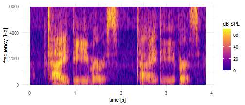

Create a spectrogram
Format
A Praat script
- wav_file_in
path for the wave to read
- max_frequency
maximum frequency to show for the spectrogram
- spectrogram_out
path of the .Spectrogram file to create
Example usage
library(tjm.praat)
wav <- system.file(
"test-wavs-a/tidyverse-tidyverse.wav",
package = "tjm.praat"
)
spectrogram_out <- tempfile("tidyverse-tidyverse", fileext = ".Spectrogram")
f_create_spectrogram <- wrap_praat_script(
script_code_to_run = create_spectrogram,
returning = "last-argument"
)
data_spectrogram <- wav |>
f_create_spectrogram(
spectrogram_out = spectrogram_out,
max_frequency = 6000
) |>
read_spectrogram()
library(ggplot2)
ggplot(data_spectrogram) +
aes(x = time, y = frequency) +
geom_raster(aes(fill = db)) +
theme_minimal() +
scale_fill_viridis_c(option = "C") +
labs(x = "time [s]", y = "frequency [Hz]", fill = "dB SPL")
Praat source code
print(f_create_spectrogram, condense = FALSE)
function (wav_file_in = NULL, max_frequency = "5000", spectrogram_out = NULL)
# <wrapped_praat_script>
# returning: "last-argument"
form: "Create a spectrogram"
infile: "Wav_file_in", ""
positive: "Max_frequency", "5000"
outfile: "Spectrogram_out", ""
endform
Read from file: wav_file_in$
Pre-emphasize (in-place): 50
To Spectrogram: 0.005, max_frequency, 0.002, 20, "Gaussian"
Save as text file: spectrogram_out$